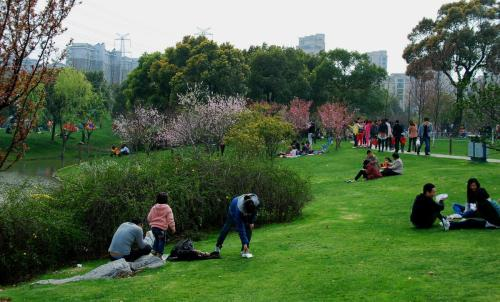

欢迎登陆
退出
首页
春天活动
春的诗词
春天的花
春天音画
放风筝
风筝是由古代汉族劳动人民发明于中国东周春秋时期，至今已2000多年。相传墨翟以木头制成木鸟，研制三年而成，是人类最早的风筝起源。后来鲁班用竹子，改进墨翟的风筝材质。直至东汉期间，蔡伦改进造纸术后，坊间开始以纸做风筝，称为”纸鸢“。到南北朝时，风筝开始成为传递信息的工具；从隋唐开始，由于造纸业的发达，民间开始用纸来裱糊风筝；到了宋代，放风筝成为人们喜爱的户外活动。

踏青
清明之时，正值春回大地，人们乃因利乘便，扫墓之余亦一家老少在山乡野间游乐一番，回家时顺手折几枝叶芽初绽的柳枝戴在头上，怡乐融融。也有的人特意于清明节期间到大自然去欣赏和领略生机勃勃的春日景象，郊外远足，一抒在严冬以来的郁结心胸，这种踏青也叫春游，古代叫探春、寻春。其含义就是脚踏青草，在郊野游玩，观赏春色。
End
制作信息：太原师范学院计算机系
网络版权信息：王佳琦@2018151210
顶部